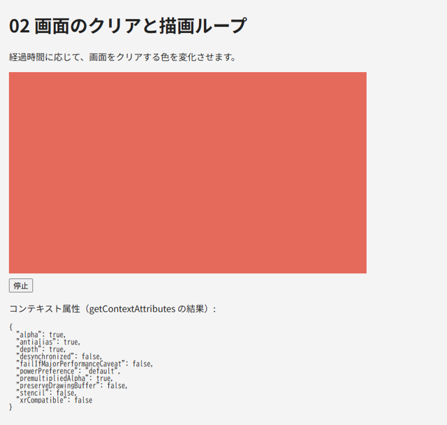

3. 最初の描画
この章では、canvas を用意して WebGL のコンテキストを取得し、画面を単色で塗りつぶします。さらに、描画を毎フレーム繰り返す描画ループを作ります。
3.1. canvas を用意する
WebGL は HTML の canvas 要素に描画します。canvas には、描画バッファーの大きさと表示サイズという 2 つの大きさがあることに注意してください。
描画バッファーの大きさは、
width属性とheight属性（JavaScript ではcanvas.widthとcanvas.height）で指定します。WebGL が実際に描画するピクセル数です。既定値は 300 × 150 です。表示サイズは、CSS の
widthとheightで指定します。描画バッファーの内容は、この大きさに拡大・縮小して表示されます。
1<!-- 描画バッファーは 640 × 360 ピクセル -->
2<canvas id="canvas" width="640" height="360"></canvas>
CSS だけで canvas の大きさを変えると、描画バッファーが引き伸ばされて表示がぼやけます。表示サイズに描画バッファーを合わせる方法は第 11 章で説明します。この章からしばらくは、width 属性と height 属性で大きさを固定した canvas を使います。
3.2. コンテキストを取得する
canvas の getContext メソッドに "webgl2" を指定すると、WebGL 2.0 のコンテキスト（WebGL2RenderingContext）が得られます。以降、WebGL の API はすべてこのオブジェクトのメソッドとして呼び出します。
getContext の第 2 引数には、描画バッファーの性質を指定するコンテキスト属性をオブジェクトで渡せます。主な属性を表 3.1 に示します。コンテキスト属性は、コンテキストを作るときにしか指定できません。
属性 |
既定値 |
意味 |
|---|---|---|
|
|
描画バッファーがアルファ（不透明度）を持つか。 |
|
|
深度バッファーを持つか（第 8 章） |
|
|
ステンシルバッファーを持つか |
|
|
アンチエイリアス（ポリゴンの縁のギザギザを滑らかにする処理）を行うか。実際に行われるかどうかは実装に依存します |
|
|
描画バッファーの色を、アルファを掛け合わせた値（乗算済みアルファ）として扱うか |
|
|
画面に表示した後も描画バッファーの内容を保持するか。 |
|
|
複数の GPU がある環境で、省電力（ |
preserveDrawingBuffer が false の場合、ブラウザーは描画結果を画面に表示した後に描画バッファーを消去してよいことになっています。そのため、毎フレーム画面全体を描き直すのが WebGL の基本的な使い方です。canvas.toDataURL で描画結果を画像として保存したい場合などは、描画した直後（同じフレームの処理の中）に呼び出すか、preserveDrawingBuffer を true にします。
3.3. 画面をクリアする
描画の最初に、描画バッファー全体を 1 色で塗りつぶします。これをクリアと呼びます。
1gl.clearColor(0.2, 0.4, 0.8, 1.0); // クリアする色（R, G, B, A）を設定する
2gl.clear(gl.COLOR_BUFFER_BIT); // カラーバッファーをクリアする
WebGL では、色の各成分を 0 から 255 の整数ではなく、0.0 から 1.0 の実数で表します。gl.clearColor はクリアに使う色をステートとして設定するだけで、実際に塗りつぶすのは gl.clear です。gl.clear の引数には、クリアするバッファーをビットの論理和で指定します。第 8 章で深度バッファーを使うようになると、gl.COLOR_BUFFER_BIT | gl.DEPTH_BUFFER_BIT のように指定します。
3.4. 描画ループを作る
アニメーションを行うには、描画を繰り返し実行します。ブラウザーで繰り返し描画を行うには、requestAnimationFrame を使います。requestAnimationFrame に渡した関数は、ブラウザーが次に画面を更新する直前に 1 回だけ呼び出されます。その関数の中で再び requestAnimationFrame を呼ぶことで、画面の更新に合わせて描画を繰り返せます。
1function render(time) {
2 // time はページの読み込みからの経過時間（ミリ秒）
3 // ... ここで描画する ...
4 requestAnimationFrame(render); // 次のフレームの描画を予約する
5}
6requestAnimationFrame(render);
setInterval を使う方法と比べて、requestAnimationFrame には次の利点があります。
画面の更新タイミング（多くの環境で 1 秒間に 60 回）に同期するため、ちらつきや無駄な描画が起きません。
タブが非表示になっている間は呼び出されないため、電力を無駄に消費しません。
3.5. 経過時間に基づいて動かす
画面の更新頻度は環境によって異なります。1 秒間に 60 回の環境もあれば、120 回や 144 回の環境もあります。「1 フレームごとに 1 度回転する」ように書くと、更新頻度の高い環境ほど速く回転してしまいます。
これを避けるには、前のフレームからの経過時間（デルタタイム）を求め、それに比例して動かします。
1let previousTime = null;
2let angle = 0;
3
4function render(time) {
5 // 前のフレームからの経過時間（秒）。最初のフレームは 0 とする
6 const deltaTime = previousTime === null ? 0 : (time - previousTime) / 1000;
7 previousTime = time;
8
9 angle += 90 * deltaTime; // 1 秒あたり 90 度回転する
10 // ... angle を使って描画する ...
11 requestAnimationFrame(render);
12}
13requestAnimationFrame(render);
一定の速さで動き続けるだけであれば、time から直接角度を計算する方法もあります（angle = 90 * time / 1000）。一時停止や速度の変更が必要な場合は、デルタタイムを積算する方法が便利です。
3.6. エラーに備える
WebGL のプログラムは、次のような理由で動作しないことがあります。
ブラウザーが WebGL 2.0 に対応していない、または GPU の問題で WebGL が無効になっています。
シェーダーのコンパイルに失敗しました（第 4 章）。
実行中に GPU がリセットされ、コンテキストが失われました（第 14 章）。
何も表示されないまま終わると利用者は原因が分からないので、少なくともメッセージを表示するようにします。本書のサンプルでは、次のように main 関数全体を try ～ catch で囲み、例外のメッセージをページに表示しています。
1function showError(message) {
2 const element = document.getElementById("error");
3 element.textContent += message + "\n";
4 element.hidden = false;
5}
6
7try {
8 main();
9} catch (error) {
10 showError(error.message);
11}
3.7. サンプル
02_clear.html は、経過時間に応じて色相を変えながら画面をクリアします。ボタンで色の変化を停止・再開でき、フレームレートと、gl.getContextAttributes で取得した実際のコンテキスト属性も表示します。

図 3.1 02_clear.html の実行結果
main 関数の内容を次に示します。
35function main() {
36 const canvas = document.getElementById("canvas");
37 // 第 2 引数でコンテキスト属性を指定できる（ここでは既定値を明示している）
38 const gl = canvas.getContext("webgl2", {
39 alpha: true,
40 antialias: true,
41 depth: true,
42 premultipliedAlpha: true,
43 preserveDrawingBuffer: false,
44 });
45 if (!gl) {
46 showError("このブラウザーは WebGL 2.0 に対応していません。");
47 canvas.hidden = true;
48 return;
49 }
50 document.getElementById("attributes").textContent =
51 JSON.stringify(gl.getContextAttributes(), null, 2);
52
53 let running = true;
54 let hue = 0; // 色相 (0 以上 1 未満)
55 let previousTime = null; // 前回のフレームの時刻（ミリ秒）
56 let frameCount = 0;
57 let fpsTime = 0;
58
59 function render(time) {
60 // 前回のフレームからの経過時間（秒）。フレームレートに依存しない動きにするために使う
61 const deltaTime = previousTime === null ? 0 : (time - previousTime) / 1000;
62 previousTime = time;
63
64 if (running) {
65 hue = (hue + deltaTime * 0.1) % 1; // 10 秒で色相が 1 周する
66 }
67 const [r, g, b] = hsvToRgb(hue, 0.6, 0.9);
68
69 // クリアする色を設定してから、カラーバッファーをクリアする
70 gl.clearColor(r, g, b, 1.0);
71 gl.clear(gl.COLOR_BUFFER_BIT);
72
73 // 1 秒ごとにフレームレートを表示する
74 frameCount++;
75 fpsTime += deltaTime;
76 if (fpsTime >= 1) {
77 document.getElementById("fps").textContent = `${(frameCount / fpsTime).toFixed(1)} fps`;
78 frameCount = 0;
79 fpsTime = 0;
80 }
81
82 requestAnimationFrame(render);
83 }
84 requestAnimationFrame(render);
85
86 const button = document.getElementById("toggle");
87 button.addEventListener("click", () => {
88 running = !running;
89 button.textContent = running ? "停止" : "再開";
90 });
91}